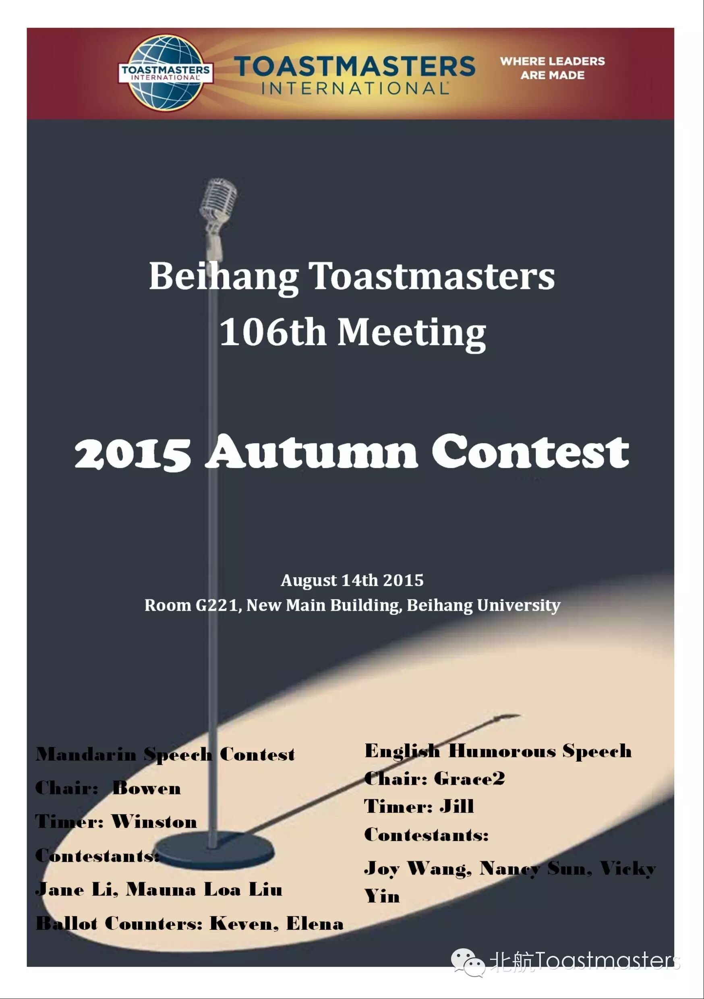
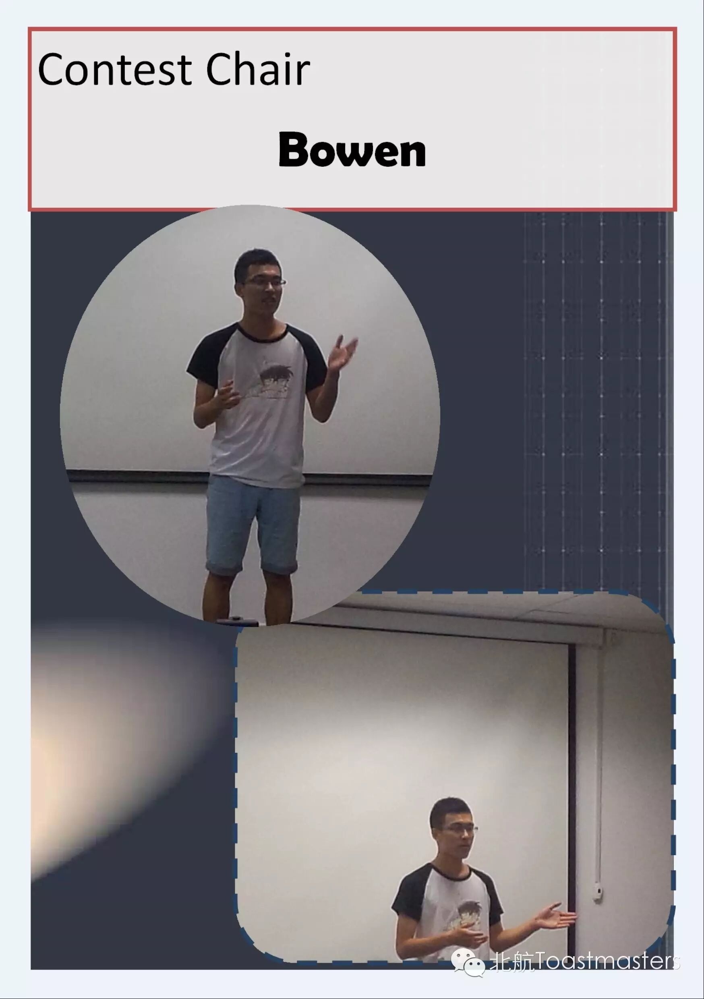
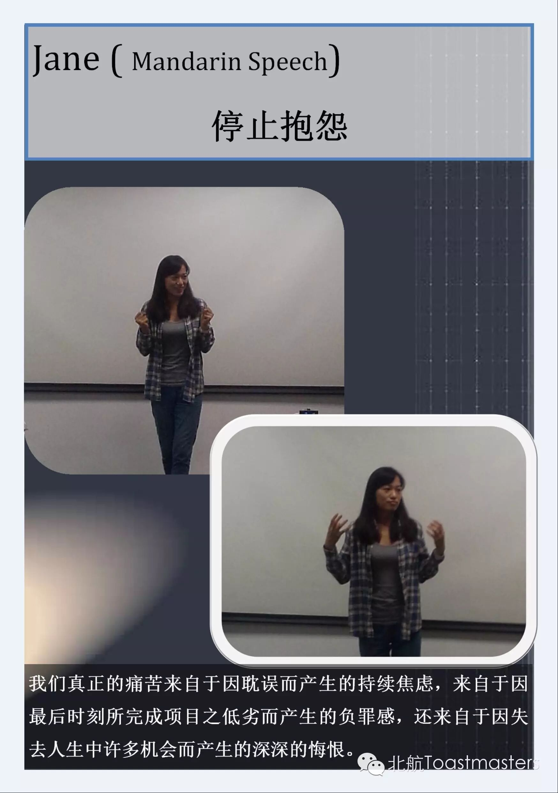
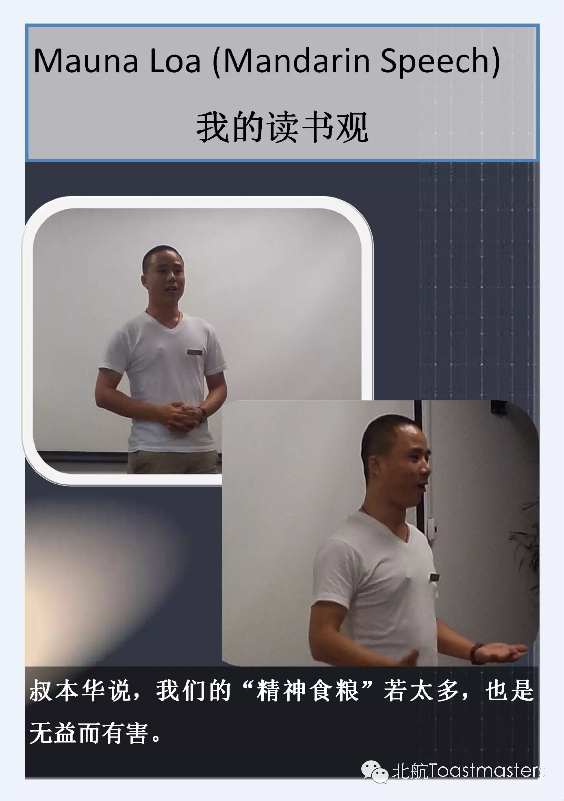
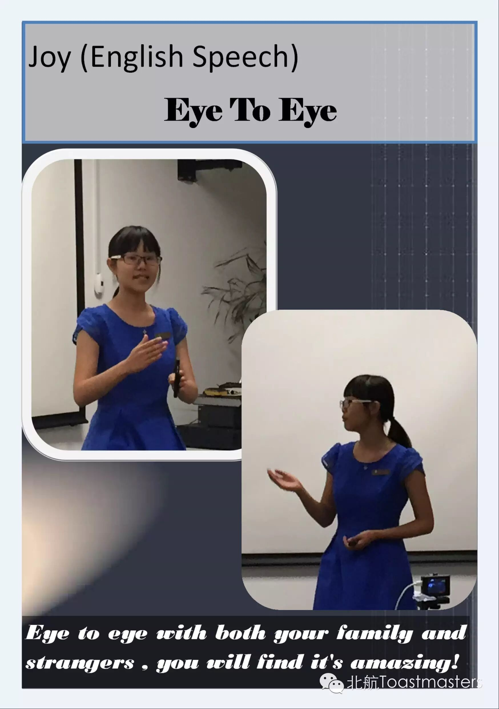
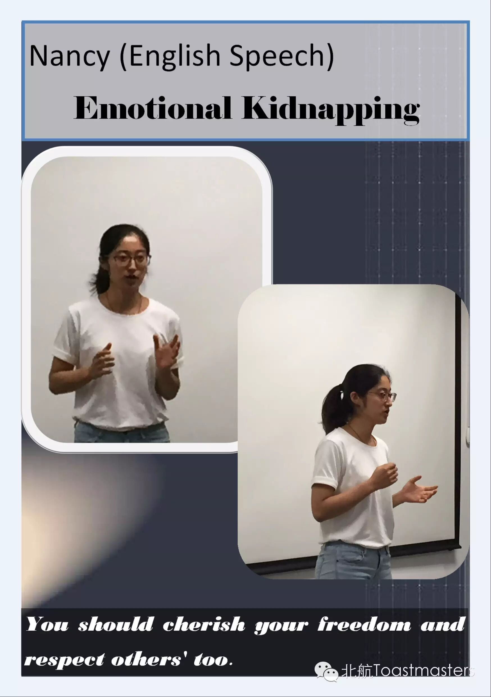
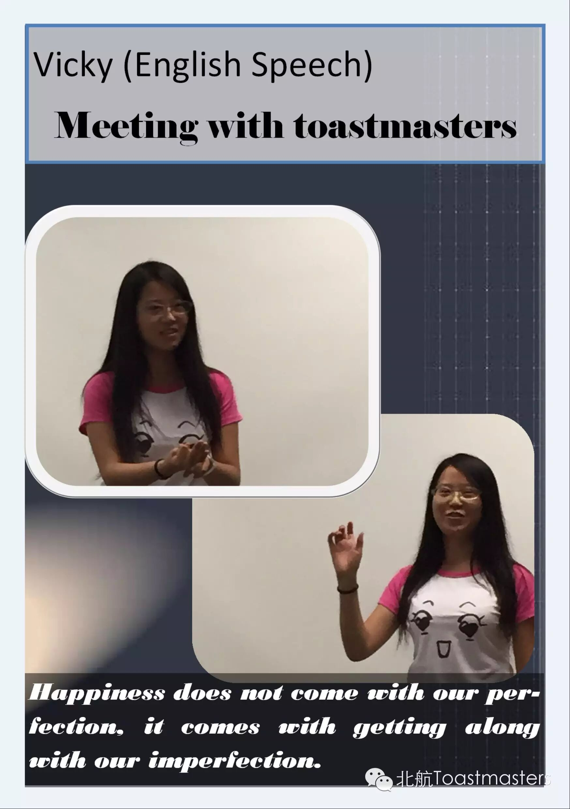
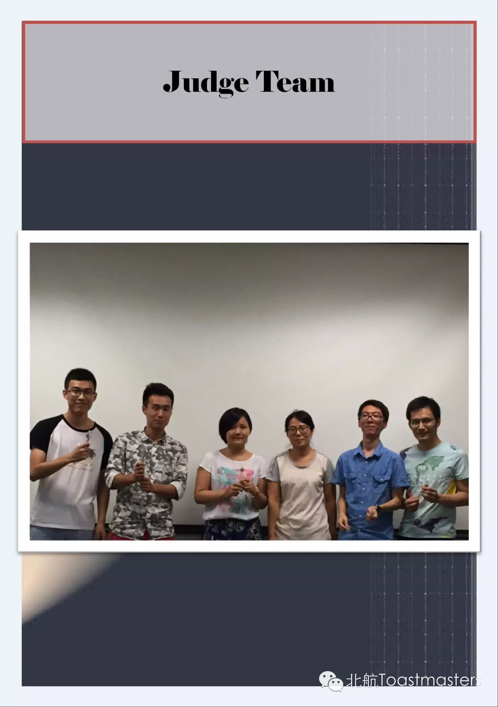
Deliver our sincere thanks to the judges: Chad and Rachel from AthenaTMC; Alex、Huifang、Sherry、Ping from AATMC,and our regular commer Joshua .Thank you all for your geilivable support.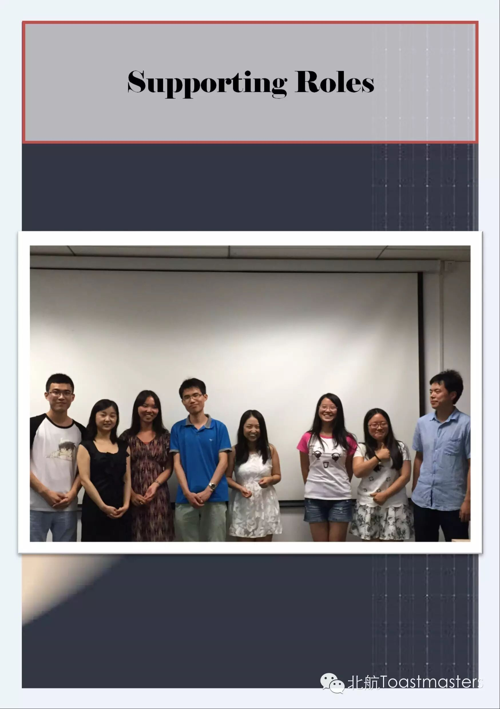
Deliver our sincere thanks to the function roles: chair-Bowen, timer-Jill and Winston, ballot counter-Keven and Elena,SAA-Isabelle.Thank you all for your geilivable support.What's more,thank MaunaLoa for his responsible photo-taking.
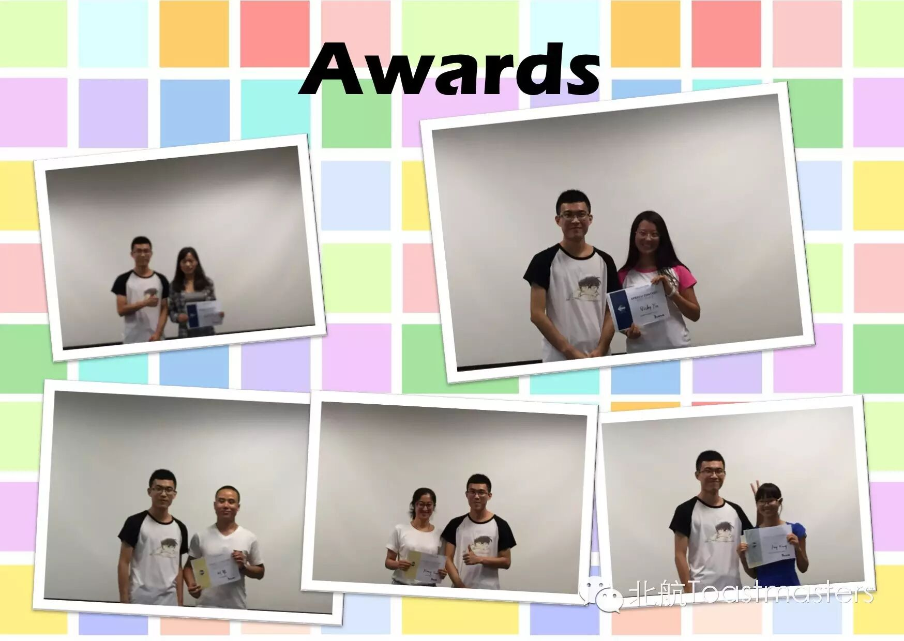
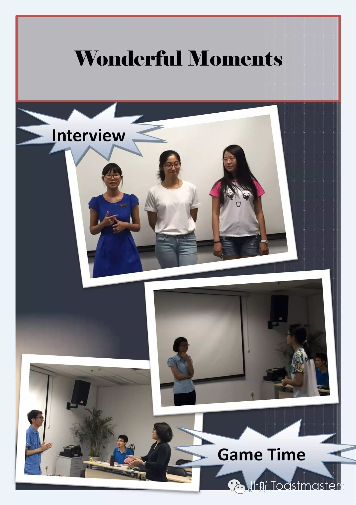
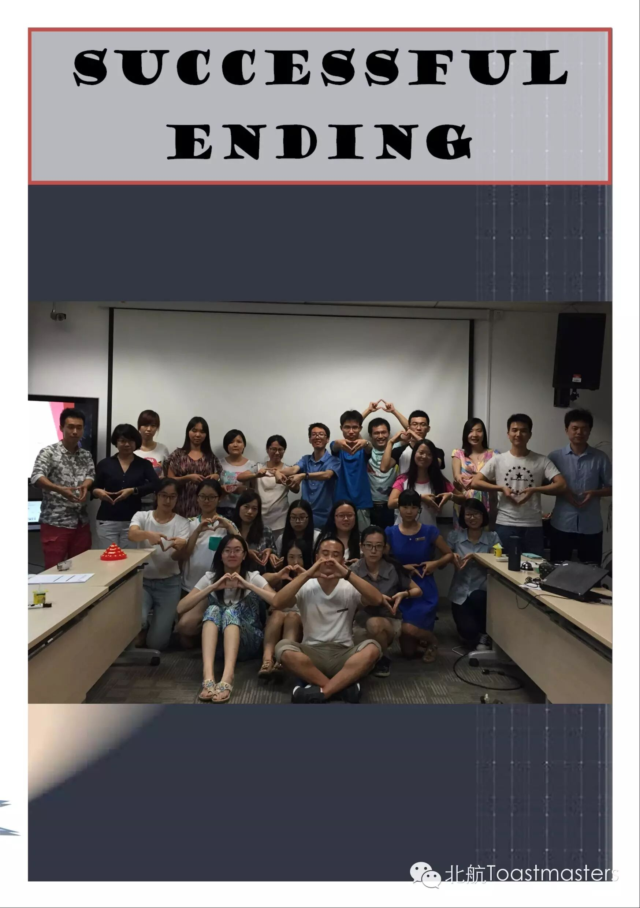
let's look forward to our next meeting!